Survival gear
Tools, gadgets and devices that keep you alive: lights, radios, decoys, traps and the canisters that refill your tank weapons.
Survival gear

Dazzles Night Creepers and the Blind.
8 scrap Grocer, Scavenger · boss loot: Mister Lanky · Toolbox 7.2%, Santa Bloater's gifts 4.3%
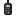
Calls your allies, or a supply drop once a day.
12 scrap Grocer, Scavenger · boss loot: The Conductor · Santa Bloater's gifts 2.2%, Supply crate 1.1%
For the Wrench, the Fabricator and trades.
3 scrap Grocer, Scavenger · boss loot: The Mutated · Toolbox 22%, Santa Bloater's gifts 6.5%
Marks the zombies you look at.
8 scrap Grocer, Scavenger · Santa Bloater's gifts 2.2%, Supply crate 1.1%

Lures every zombie within 32 blocks.
4 scrap Grocer, Scavenger · Santa Bloater's gifts 4.3%, Supply crate 2.2%
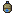
Puts out fire or refills the water pistol.
3 scrap Grocer, Scavenger · Santa Bloater's gifts 4.3%, Supply crate 2.2%

Held: a compass to your nearest ally. Loud!
2 scrap Grocer, Scavenger · Vase 7.2%, Santa Bloater's gifts 4.3%
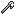
Full repair of a weapon, with 1 or 2 tape.
4 scrap Grocer, Scavenger · Toolbox 22% · craft: 3 Scrap, 1 Stick

35% chance of a bonus drop from your kills.
15 scrap Grocer, Scavenger · boss loot: Mega Mascot, Mister Lanky · Vase 3.6%, Santa Bloater's gifts 2.2%
Beeps and marks the zombies passing by.
6 scrap Grocer, Scavenger · Santa Bloater's gifts 2.2%, Supply crate 1.1%
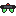
See in the dark.
9 scrap Grocer, Scavenger · boss loot: Mister Lanky · Santa Bloater's gifts 2.2%, Supply crate 1.1%
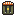
Needs 6+ blocks of air. 20 jumps.
10 scrap Grocer, Scavenger · Santa Bloater's gifts 2.2%, Supply crate 1.1%
Deployables
Place them or throw them, then let them do the work.
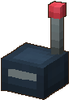
Sound Decoy
Beeps for 3 seconds where it lands: every zombie around walks to it, the Blind too.
Throw it away from you, then sneak past.
5 scrap Tinkerer · Santa Bloater's gifts 4.3%, Supply crate 2.2%
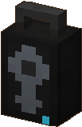
Portable Speaker
Plays music for 15 seconds: zombies in 20 blocks gather around it.
Put it next to a gas column for a big surprise.
8 scrap Tinkerer · boss loot: The Conductor
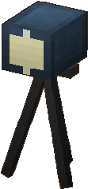
Light Projector
A strong beam of light: zombies in it slow down, then start burning.
Night Creepers hate it.
10 scrap Tinkerer · boss loot: The Conductor, Mister Lanky
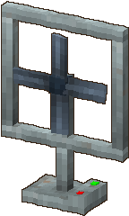
Fan Propeller
Blows a storm for 8 seconds: zombies in front of it are pushed far away.
Push them off a cliff or into a trap.
12 scrap Tinkerer · boss loot: Mega Mascot

Gas Column
Hit it and it leaks gas; set it on fire and it explodes.
Lure the horde around it first.
8 scrap Tinkerer
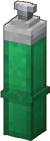
Oxygen Tank
Hit the valve and it shoots away like a rocket, bouncing on walls and ramming zombies.
Unpredictable: stand behind it.
6 scrap Tinkerer
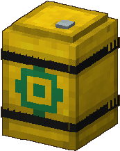
Virus Barrel
Two hits and it bursts into a plague cloud that spreads to nearby barrels in a chain.
Line up several barrels for a chain reaction.
10 scrap Tinkerer · boss loot: Mother Bloater
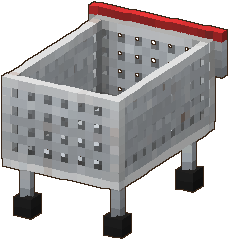
Shopping Cart
Push it into the horde: it rams the zombies on its way.
Fill it with a shopping crate for heavier hits.
6 scrap Tinkerer
Canisters

Fills the emptiest fuel tank in your inventory. Right click a buggy with it: half a tank.
6 scrap Inventor · boss loot: The Mech Trooper · dropped by The Demolisher, The Lawnmower Man, Angry Chef, The Tank, Hammer Tank · Toolbox 14%

Fills the emptiest nitrogen tank in your inventory.
6 scrap Inventor · boss loot: The Zombot · dropped by The Demolisher, The Lawnmower Man, Angry Chef, The Tank, Hammer Tank